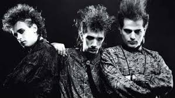
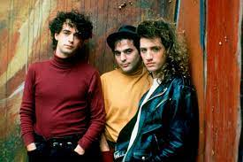
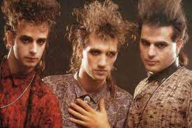
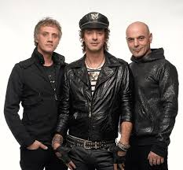
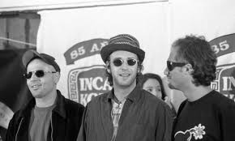
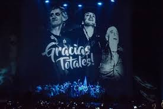
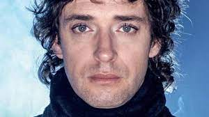
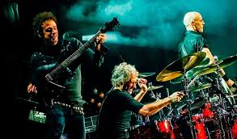

Recorrido por la vida del grupo musical mas iconico de la Argentina
Soda Stereo nació en 1982 como un grupo heredero directo del new wave, impulsado por bandas como The Police y Television. En sus comienzos combinaba la energía del punk-rock con las melodías del reggae y el ska, aunque su música se fue tornando cada vez más pop con el correr de los discos. No fue casualidad que las primeras repercusiones obtenidas por Soda fueran, en 1983, año en el cual Charly García incorporó ritmos bailables, con su disco “Clics Modernos”. Por el año 1980 Gustavo Cerati se presentó en un cabaret de Parque Centenario con un grupo en el cual cantaban dos chicas inglesas, bautizado Sauvage. El repertorio incluía covers y canciones propias, más improvisadas que compuestas, generalmente bailables. Estudiante de publicidad, en la Universidad del Salvador, era compañero de Zeta Bosio, quien lo invitó a zapar con su propio grupo: The Morgan (en el que también estaba Andrés Calamaro en teclados).
Primero Cerati se integró a The Morgan y luego formaron, sucesivamente, el grupo Stress (junto a Charly Amato y el baterista Pablo Guadalupe) y Proyecto Erekto (junto a Andrés Calamaro), aunque no cubrieron sus expectativas de emprendimientos musicales. A comienzos de 1982, Cerati y Bosio soñaban con armar un trío estilo The Police, pero les faltaba el baterista. Carlos Ficcichia llamó por teléfono a María Laura Cerati para invitarla a salir. Atendió su hermano: Gustavo. Entablaron una charla de compromiso y terminaron hablando del padre de Carlos, un famoso baterista de jazz: Tito Alberti (autor de grandes canciones del repertorio infantil). A la semana, Gustavo y Zeta visitaron la casa de Charly, para escucharlo tocar en la batería de su padre, en lo que fueron los comienzos de Soda Stereo. Después de examinar algunas ocurrencias (Aerosol, Side Car) adoptaron el nombre de Los Estereotipos, debido a una canción de The Specials que les apasionaba a los tres y que utilizaron unos meses. De esa primerísima época data un demo en donde grabó guitarras Richard Coleman que fue integrante oficial de la banda durante muy poco tiempo en aquellos días de 1982. Las canciones de aquel disco de presentación eran “¿Por qué no puedo ser del jet set?”, “Dime Sebastián” y “Debo soñar” (de Ulises Butrón), acompañados por Daniel Melero en teclados y Butrón en guitarra. Luego surgieron los nombres “Soda” y “Estéreo”, dando como resultado el famoso Soda Stereo como denominación definitiva de esta banda que se quedó sin Coleman, ya que el mismo Richard reconoció que la banda sonaba mejor sin él.
En 1983 consiguieron cierta resonancia con varios demos presentados en Radio del Plata y en discotecas. Eran las primeras versiones de “Jet-Set” y “Vitaminas”. Una noche a los Soda los llamaron de un pub para suplir a la banda Nylon, que no iba a poder tocar. Así comenzó un período de constantes presentaciones que los condujeron al Bar Zero, lugar excluyente del under porteño, junto al Café Einstein. En el tercer show, un productor discográfico los escuchó y los llevó a grabar profesionalmente para CBS, hecho que finalmente no se concretó hasta mediados de 1984. Ya por entonces Soda Stereo comenzó a trabajar muchísimo sobre su imagen. Alfredo Lois (amigo del grupo y compañero de estudios, considerado el cuarto soda) fue el encargado de las producciones visuales: editar un video-clip antes que un LP, algo totalmente atípico por aquella época. El tema elegido fue “Dietético”, que realizaron con equipos “prestados” por Cablevisión, donde Lois trabajaba de camarógrafo. “Soda Stereo” fue el primer disco y se editó en 1984. Contó con la producción de Federico Moura (Virus), quien se limitó a dar algunos consejos, ya que “todos los temas tenían los arreglos resueltos y pensados”. Si bien el resutado fue un sonido más frío que el obtenido en vivo, los músicos quedaron muy conformes y, lo que fue más importante: consiguieron una gran recepción por parte de la prensa. La grabación se realizó en los obsoletos estudios de CBS de Buenos Aires, y el trío (Cerati, Alberti, Bosio) fue acompañado por Daniel Melero en teclados (autor de “Trátame suavemente”) y Gonzo Palacios en saxo, con la categoría de “músicos invitados”, una práctica que adoptaron en lo sucesivo y que en algunos casos resultaron ser verdaderos miembros de la banda, denominados por los fans y los medios con el título de cuarto Soda. La presentación oficial de este material fue en el teatro Astros, el 14 de diciembre de 1984. Para la ocasión, y eligiendo como motivación el tema “Sobredosis de TV”, se colocaron 26 televisores prendidos y fuera de sintonía, sumado a una gran cantidad de máquinas de humo, que dieron un inusual y atrapante efecto visual. Aunque el estreno del álbum se realizó el 1 de octubre y fue organizada, también, como si se tratara de un espectáculo (por la agencia Rodríguez Ares), algo que nunca se había hecho en la Argentina hasta ese momento.
El lugar elegido fue un local céntrico de comida rápida de la cadena Pumper Nic (Suipacha entre Corrientes y Lavalle), la más popular entre los jóvenes argentinos de los ’80s, y se proyectó el videoclip. En octubre de ese año también tuvieron la posibilidad de presentarse ante el gran público de Vélez Sarsfield, en el Festival Rock & Pop, donde también estuvieron INXS, Nina Hagen, Charly García, Virus y Sumo, entre otros. Ya para aquel entonces se incorporaron como invitados estables Fabián Von Quintiero y Gonzalo Gonzo Palacios, en teclados y saxo, respectivamente. Con el segundo disco “Nada Personal” (1985) Soda Stereo demostró que, sin abandonar los ritmos “bailables” podía lograr más profundidad en las letras y madurez en las melodías, hechos que se acentuaron en el trío con el paso del tiempo. Las encuestas lo dieron como el mejor disco del año y la presentación en Obras Sanitarias, de este material, fue unánimemente calificada como “sorprendente”. En 1986 los Soda salieron de gira por Latinoamérica y cosecharon un éxito inesperado. Pero en 1987, en una segunda gira por el continente, la repercusión fue aún mayor: 22 presentaciones en siete países y 17 ciudades diferentes, ante aproximadamente un total de 200mil espectadores, abriendo nuevos mercados hasta ese momento, inexplorados para los artistas nacionales. En junio de 1986, luego de una gira nacional, el trío grabó su segundo videoclip con “Cuando pase el temblor”, nuevamente bajo la dirección de Alfredo Lois, en las ruinas del Pucará de Tilcara (Jujuy). El video, que completó la filmación de la presentación en el estadio Obras, fue nominado como finalista del 12° World Festival of Video and TV, en Acapulco, unos años después. “Signos” (1986) fue un paso clave en la banda. Sin repetir fórmulas exitosas, este trabajo fue mucho más directo que los anteriores. Al trío se le sumaron Von Quintiero en teclados, Richard Coleman en guitarra y Gonzo liderando una sección de vientos. “Signos” fue el primer disco del rock nacional en editarse en formato de compact disc. Fue fabricado en Holanda y distribuido en toda Latinoamérica, aunque recién salió a la venta en 1988. Ya dentro de la gira “Signos”, el 3 de diciembre hicieron su primera presentación en Ecuador y el 9 y 10 de enero de 1987 en Uruguay (Punta del Este y Montevideo). Los días 11 y 12 de febrero de 1987, Soda Stereo volvió a presentarse en Chile, en la edición número 28 del Festival Internacional de la Canción de Viña del Mar, donde ganaron el premio Antorcha de Plata. El Festival de Viña, transmitido por televisión a muchos países latinoamericanos, expandió la fama de la banda por todo el continente, que no tardó en transformarse en una masiva adhesión incondicional que dio en llamarse Sodamanía. Dos meses después, el 23 de abril, batió récords de público en un recital de rock en Paraguay con su presentación en el Yacht Club. Mientras tanto, “Signos” fue disco de platino en Argentina, triple disco de platino en Perú y doble platino en Chile.
El 2 de mayo de 1987 se presentaron en la discoteca Highland Road de San Nicolás (Buenos Aires), cuando sucedió un derrumbe en el que murieron cinco jóvenes y hubo más 100 heridos mientras estaban tocando “Persiana americana”. Con una carga emocional muy fuerte tocaron en Obras el 8 y 9 de mayo para presentar “Signos” en Buenos Aires. Como expresión de duelo el grupo no utilizó la escenografía ni los juegos de iluminación que tenían preparados. De todas esas giras, “Ruido blanco” fue parte del viejo concepto de pensar que Soda sonaba mejor en vivo que en estudios. Con material registrado a lo largo de toda la gira latinoamericana (sin el objetivo de publicarlo), se realizó la mezcla final de ocho temas en la isla de Barbados. Si bien se perdió un poco la calidad de sonido de los discos anteriores, fue indudable que este trabajo ganó en la frescura, espontaneidad y potencia característica de los shows en vivo. El retorno al disco de estudio fue con “Doble vida” (1988), primer álbum grabado íntegramente fuera del país. La producción estuvo a cargo de Carlos Alomar (quien trabajó con Mick Jagger, Paul McCartney y David Bowie, entre otros). Logró un sonido más tecnificado del trío y sobresalieron dos hits: “Lo que sangra (La cúpula)” y “En la ciudad de la furia” (originalmente, ése iba a ser el título de la placa). A más de doce meses del último recital en la Capital Federal, Soda presentó “Doble vida” en la cancha de hockey de Obras Sanitarias, ante 25 mil personas. Para coronar un gran año, cerraron el Festival por la Democracia que se realizó en Avenida del Libertador y 9 de Julio (Buenos Aires) ante 150 mil personas junto a Luis Alberto Spinetta, Fito Páez, Los Ratones Paranoicos, Man Ray y otros artistas. A fines de 1989 grabaron una nueva versión de “Languis” (canción incluida en “Doble vida”) y una canción estreno llamada “Mundo de quimeras”. Ambos fueron editados en el maxi-simple “Languis” (1989) junto a versiones remixadas de “En el borde” y “Lo que sangra (La cúpula)”.
Luego de editado el disco, Soda realizó dos presentaciones con entradas agotadas en The Palace de Los Ángeles, convirtiéndose en la segunda banda de rock en español en presentar un espectáculo en Estados Unidos con entradas agotadas. Fue el 8 de diciembre de 1989, solo tres meses después de que el también argentino Miguel Mateos hiciera lo propio el 7 de septiembre de aquél año. A principios de 1990 la banda se presentó en el estadio José Amalfitani (Vélez), compartiendo cartel, en igualdad de condiciones, junto al dúo inglés Tears For Fears en un show ante 32 mil personas. En dicho concierto contaron con la presencia de David Lebón, ex guitarrista de Pescado Rabioso y Seru Giran, que los acompañó en guitarra en el tema “Terapia de amor intensiva”. El éxito continental llevó a la cadena europea MTV News a prestar atención a lo que estaba sucediendo en América Latina con el rock en español, dedicándole un programa especial al grupo, hecho sin antecedentes para un grupo de rock de habla no inglesa. En junio, Soda Stereo viajó a Estados Unidos para registrar una nueva placa en los Estudios Criteria de Miami. Para ello contaron con el aporte conceptual de Daniel Melero y la participación de Andrea Álvarez y Tweety González, siempre en calidad de invitados. El resultado fue el álbum “Canción animal” (1990), considerado generalizadamente como uno de los mejores de la historia del rock latino. Allí se editó la canción más popular: “De música ligera”, además de otros clásicos de la banda como “Canción animal”, “Un millón de años luz”, “(En) El séptimo día” y “Té para tres”. Aquel nuevo álbum significó para la banda el acceso al público español, que se plasmó en mayo de 1992 con presentaciones en las ciudades de Madrid, Oviedo, Sevilla, Valencia y Barcelona. Era la culminación de un enorme tour por el interior y Latinoamérica, en presentación del disco “Canción animal”. Pero en materia de público, el máximo registrado en una sola presentación fue el 14 de diciembre de 1991, con 250 mil personas en la 9 de Julio, en el show gratuito “Mi Buenos Aires Querido”. Ese año también habían batido el record de 14 funciones agotadas en el teatro Gran Rex. Tras ese furor sobrevino un período de dispersión. Se editó “Rex mix” (1991) que fue un trabajo en vivo, con material registrado en los shows del año anterior y retoques de estudio. En noviembre de 1992 los Soda fueron protagonistas de un hecho inédito en la Argentina: la transmisión de TV en estéreo con la presentación del “Dynamo” (1992) que los tres músicos, más Tweety González (teclados) y Flavio Etcheto (trompeta), tocaron casi todo el álbum en el programa “Fax”, de Nicolás Repetto y por Canal 13.
Con una puesta de luces y un sonido impecables, Cerati cantó sobre pistas previamente grabadas de las canciones (procedimiento conocido como “playback”) y reforzaron en vivo guitarras, bajo y batería. En diciembre llegaron los ocho shows en el estadio Obras, también destacados por la puesta en escena. “Dynamo” no vendió como se esperaba, porque en aquellos días, el grupo cambió de compañía discográfica: Sony no tenía intenciones de apoyar un grupo que emigraba y BMG no podía incentivar un producto de otra empresa. El ’94 fue el peor año de Soda: por decisión unánime, tomaron distancia del mito y evaluaron la posibilidad de separarse definitivamente. Cerati ya había encarado proyectos solistas (“Colores santos”, con Melero, y “Amor amarillo”), Zeta se dedicó a la producción de otras bandas (Peligrosos Gorriones, Aguirre) y Charly desapareció de la música para incorporarse al jet-set de las revistas. Luego de tres años de silencio discográfico (se editaron dos recopilaciones en 1994: “Zona de promesas”, álbum de remixes, y “20 grandes éxitos”), el trío volvió con “Sueño Stereo” (1995). Los recitales de agosto demostraron que mantenían la vigencia de años anteriores, razón por la cual fueron invitados a participar del 113º aniversario de la Ciudad de La Plata, en noviembre, ocasión para la cual reunieron 200 mil personas en la Plaza Moreno, con Julio y Marcelo Moura (exVirus) como invitados. A mediados de 1996 fueron invitados por la cadena MTV para sus famosas sesiones unplugged (desenchufadas) en Miami. Luego de rechazar la invitación varias veces, Soda Stereo logró que la cadena aceptara su propuesta de tocar con sus instrumentos eléctricos y enchufados, aunque reorquestando y modificando las versiones clásicas para hacerlas más lentas y musicalmente más complejas, Esta presentación fue registrada parcialmente en la placa “Confort y música para volar” (1996) y de manera completa en una nueva versión del álbum editado en 2007. El álbum incluyó además cuatro temas nuevos que habían quedado fuera de “Sueño Stereo” y un track interactivo con historietas e imágenes en video de la presentación en MTV. Un largo silencio antecedió a la despedida final. Gustavo Cerati participó en un álbum tributo a Queen pero, finalmente, Soda Stereo anunció su disolución a mediados de 1997. La banda encaró la última gira, que pasó por México, Venezuela y Chile, antes de cerrar en dos shows en el estadio de River Plate, en septiembre. Durante el tour se grabaron versiones en vivo, que serían editadas en dos discos separados, bajo el nombre de “El último concierto A” y “B”. En diez años de separación, varias fueron las oportunidades en las cuales se rumoreó un reencuentro. Sin embargo, sólo se concretó para finales de 2007: la banda anunció cinco shows en River Plate y luego una gira por las principales capitales de Latinoamérica, pero aclararon que en 2008 cada uno continuaría con sus proyectos independientes: Gustavo con su carrera solista, Zeta al mando de su empresa Alerta Discos y Charly con Mole, su proyecto musical. A pesar de los constantes rumores de reunión, los cuales irónicamente comenzaron al poco tiempo de la separación, pocas noticias hubo sobre Soda, salvo un especial para TV de “El último concierto”, producido por la cadena HBO, y un documental llamado “Soda Stereo: La leyenda”, producido por MTV. Finalmente en el año 2002 se volvió a ver al trío reunido en los premios MTV Latinoamérica para recibir el premio Legend por su trayectoria musical. A siete años de la separación fue muy raro el hecho que no existiesen lanzamientos oficiales, por lo que a finales del 2003 se anunció que Sony Music editaba el primer DVD de Soda Stereo, que contenía mucho material inédito, proporcionado por Gustavo, Zeta y Charly, además de personas muy allegadas a la banda. Estaba claro desde un principio que la producción fue por parte de Sony y la productora Cuatro Cabezas (con Mario Pergolini al frente). El resultado salió a la calle en noviembre de 2004 y fue titulado “Soda Stereo: Una parte de la Euforia (1983-1997)”.
Un documental que resumió la historia de la banda a través de escenas de conciertos, backstage, entrevistas, ensayos, pruebas de sonido, presentaciones en TV, etc. No obstante dicho DVD sólo contenía la historia de Soda en Sony/CBS, excluyendo la etapa en BMG, correspondiente a “Sueño Stereo” y “Confort y música para volar” (de 1994 a 1996), lo que lo hacía un documento incompleto. El 20 de septiembre de 2005 se editó en Argentina un DVD sobre el concierto final que dio Soda Stereo exactamente ocho años antes en el Estadio de River Plate, con el título de “El último concierto (En vivo)”. El DVD, a diferencia del especial que produjo HBO, estaba centrado en el concierto de Buenos Aires en audio 5.1 e incluía dos temas que habían quedado afuera anteriormente: “Juegos de seducción” y “Sobredosis de TV”. Además, incluyó una opción multi-cámara para una sesión de ensayo de “Primavera 0” y un documental de 25 minutos de la gira de despedida con imágenes de los conciertos y pruebas de sonido de México, Venezuela, y Argentina. También traía una entrevista al desaparecido cuarto Soda Alfredo Lois, autor de ese trabajo, uno de los últimos que hiciera antes de fallecer. En 2007, al cumplirse 10 años de su separación, la banda decidió reunirse por una vez con el fin de realizar una gran gira continental. El 6 de junio de 2007 se conoció la noticia y el 9 se oficializó: Soda Stereo volvería a los escenarios mediante una única gira americana llamada “Me verás volver” (frase emblemática del grupo tomada de “En la ciudad de la furia”). La grilla de concierto superó el millón de entradas vendidas a través de nueve países de América, realizando 23 conciertos en solo dos meses. En la última semana de agosto de 2008, Sony-BMG lanzó un nuevo álbum llamado “Me verás volver (Hits & +)”, un trabajo con 18 reediciones de temas en que fueron remasterizados en 2007. El disco no contenía temas nuevos, pero incluía un código para acceder a contenidos exclusivos en su sitio web, entre ellos grabaciones de los temas ejecutados en la gira. El álbum alcanzó el primer puesto en ventas en Argentina y Chile. Y, por supuesto, luego de los shows, se editaron los CDs y DVD en vivo. La historia de Soda se fue opacando en actualidad. En la madrugada del domingo 16 de mayo de 2010, Gustavo Cerati sufrió un ACV (accidente cerebrovasuclar), tras presentarse en un concierto en Caracas (Venezuela) cuya gira tuvo el mismo nombre que su último disco solista (“Fuerza natural”).